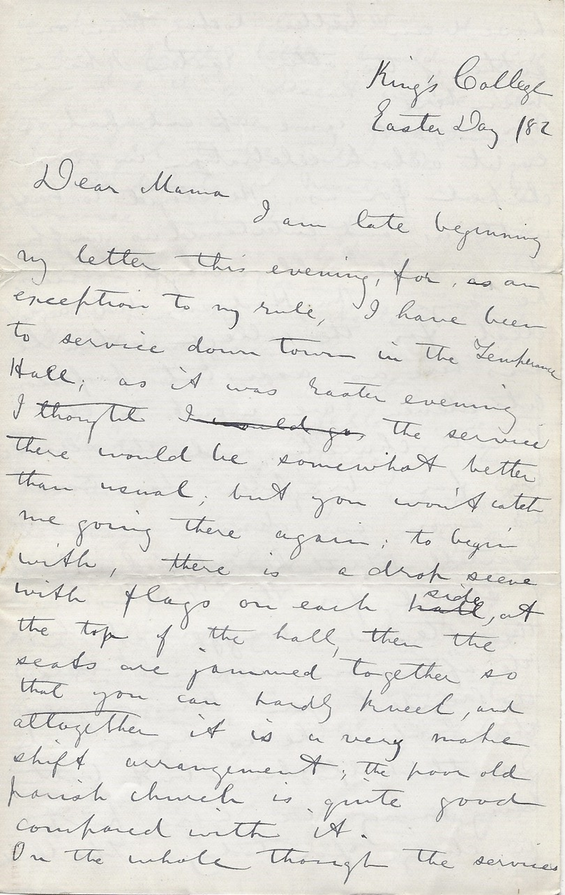

King’s College
Easter Day / 82
Dear Mama
I am late beginning my letter this evening, for, as an exception to my rule, I have been to service down town in the Temperance Hall; as it was Easter evening I thought the service there would be somewhat better than usual; but you won’t catch me going there again: to begin with, there is a drop scene with flags on each side, at the top of the hall, then the seats are jammed together so that you can hardly kneel, and altogether it is a very illegible shift arrangement; the poor old parish church is quite good compared with it.
On the whole though the services have been better today than on either of the other Easters I have been here. Mr. Maynard came up and had an eight o’clock celebration in our chapel for us. He stayed to breakfast with us, and entertained us with some old college day stories, he says Mr. Hodgson did a great deal for the college when he was here as assistant professor.
At eleven, we went to the Parish church, and the service was far brighter than usual; as soon as dinner was over Martell (Frith having backed out) and I started for the Forks in the steward’s waggon, to have the afternoon service there, the President you know goes there when he is here, and Smith helps him, but both being away, we were put in charge for today. The Church is about six miles out, and is a very pretty little building; the congregation is a very good one, as it ought to be with the way it is attended to. Martell read the service, and I read the lessons and preached; what do you think of that? The sermon was an Easter one by Dr. Neale. I did not feel very nervous, and when once in was all right.
As a good many fellows went to Halifax yesterday to have Easter in the city, there are only six of us left in college; Frith got a box from home yesterday and he told us all at teatime to come over to him when we all got back from church, that means about ten I suppose, as some of the chaps go to houses in town after service; I suppose he is going to set his good things before us. All last week we had special services in our own chapel, and the Parish church on Good Friday afternoon some of us went over to Falmouth to help Prof. Wilson with his singing.
We are not hearing much more about the dismissal yet, but Wednesday is the next meeting of governors, so something will then be done I suppose. Peters, or I suppose I ought to say Rev. G.I.D. Peters, (the poet) wrote to me a while ago asking me to come up to Wolfville on Thursday in Easter week to read at a big concert he is getting up; I consented to go, for it will be a good chance to see Dr. Schurman; and as Petes said “he would put me up and make it warm for me” it won’t cost me much; he says I am to read two pieces, and I suppose they will be Irish, most likely I will take the Gridiron and Dan O’Rourke, as they will not have heard those up there perhaps, it is making an invasion into the Baptist camp, isn’t it, going up there illegible
There is another very important item, I had almost forgotten. You remember me telling you Dr. Spencer had enlisted us all to manual labour in fixing up the woods; during last Xmas vacation he collected about $300 for the same work and got promise of a great deal of labour in hauling etc. from farmers about (for he is a perfect beggar) so that he will be able to make a good job of it; he intends laying a plank walk right from college into Clifton Avenue, that is the short way to town through the cricket field and woods, being about ½ a mile.
On Monday the little Doctor had us all to meet him in the Common’s Hall, (about 12 of us, the remaining ones) he began his remarks by saying ‘Well Gen’l’men, King’s College hasn’t gone down yet!’ (great applause) then he arranged with us to turn out the next day as woodmen; every man was to borrow his own axe, to be on hand at half past eight, and to put in eight hours solid work. That afternoon after church I began my search for an axe, I walked home with Miss Daisy King in the hope that I could borrow an axe there, but alas! they had not such a thing in their house; (I was expecting on having the fun of bringing one on my shoulder up through town) when we found such an implement did not belong to the King household, she expressed great sorrow and volunteered to help me in searching for one, as it was all for ‘Old King’s’, she thought some of her neighbouring relations might perhaps own such a thing, but we sought in vain; just as I started for college, she came running out of the house again, and said that if I came down any time in the evening she would guarantee an axe, I accepted the bargain & I started for college as hard as I could, for I knew I was late for tea, when I got to the hall, the fellows were nearly all done tea, and all faces looked at me with the enquiry written on them, ‘and you, have you got your axe?’ all had been raising axes.
Through the evening I went down and found the axe in readiness, it had been got from a servant man, so after a stay of a few moments I brought home the axe in triumph. Next morning saw us all hard at work in the woods, lopping off dead branches, trimming out the trees, and clearing generally, we put in a good hard day’s work, and the Doctor was so delighted with the amount of work done, that he let us off nearly an hour before time was up, thinking we had done our share fully. When the work was over I sailed down town with my axe; I was bound to get it through town in the daylight sometime.
There is a young fellow Stamer going to leave us tomorrow morning for Winnipeg; he was a Divinity student, but owing to a little trouble he got into and the money supply stopping, he is giving up the course, and starts in the morning to carve his fortune in the great N.W. He has asked me for a letter to Willie, so I am giving him one.
Kisses to youngsters, love to all your loving son E.A.H.